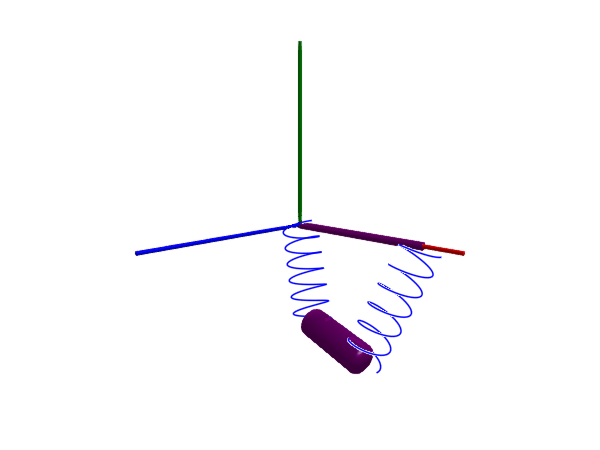

Free motions
This example demonstrates how a free-floating Body can be simulated. The body is attached to the world through a FreeMotion joint, i.e., a joint that imposes no constraints. The joint is required to add the appropriate relative state variables between the world and the body. We choose state = true and isroot = true in the FreeMotion constructor.
using Multibody
using ModelingToolkit
using Plots
using JuliaSimCompiler
using OrdinaryDiffEq
t = Multibody.t
D = Differential(t)
world = Multibody.world
@named freeMotion = FreeMotion(state = true, isroot = true)
@named body = Body(m = 1)
eqs = [connect(world.frame_b, freeMotion.frame_a)
connect(freeMotion.frame_b, body.frame_a)]
@named model = ODESystem(eqs, t,
systems = [world;
freeMotion;
body])
ssys = structural_simplify(IRSystem(model))
prob = ODEProblem(ssys, [], (0, 10))
sol = solve(prob, Rodas4())
plot(sol, idxs = body.r_0[2], title="Free falling body")
# Plot analytical solution
tvec = 0:0.1:sol.t[end]
plot!(tvec, -9.81/2 .* tvec .^ 2, lab="Analytical solution")
The figure indicates that the body is falling freely, experiencing a constant acceleration of -9.81 m/s² in the $y$ direction, corresponding to the gravity parameters of the world:
Model world with 12 (18) equations
Unknowns (9):
(frame_b₊r_0(t))[1] [defaults to 0.0]: Position vector directed from the origin of the world frame to the connector frame origin, resolved in world frame
(frame_b₊r_0(t))[2] [defaults to 0.0]: Position vector directed from the origin of the world frame to the connector frame origin, resolved in world frame
(frame_b₊r_0(t))[3] [defaults to 0.0]: Position vector directed from the origin of the world frame to the connector frame origin, resolved in world frame
(frame_b₊f(t))[1]: Cut force resolved in connector frame
(frame_b₊f(t))[2]: Cut force resolved in connector frame
(frame_b₊f(t))[3]: Cut force resolved in connector frame
(frame_b₊tau(t))[1]: Cut torque resolved in connector frame
(frame_b₊tau(t))[2]: Cut torque resolved in connector frame
(frame_b₊tau(t))[3]: Cut torque resolved in connector frame
Parameters (7):
n[1] [defaults to 0]: gravity direction of world
n[2] [defaults to -1]: gravity direction of world
n[3] [defaults to 0]: gravity direction of world
g [defaults to 9.80665]: gravitational acceleration of world
mu [defaults to 3.986e14]: Gravity field constant [m³/s²] (default = field constant of earth)
point_gravity [defaults to false]
render [defaults to true]Body suspended in springs
If we instead model a body suspended in springs without the presence of any joint, we need to give the body state variables. We do this by saying isroot = true when we create the body, we also use quaternions to represent angular state using quat = true.
using Multibody.Rotations: QuatRotation, RotXYZ, params
@named begin
body = BodyShape(m = 1, I_11 = 1, I_22 = 1, I_33 = 1, r = [0.4, 0, 0],
r_0 = [0.2, -0.5, 0.1], isroot = true, quat=true)
bar2 = FixedTranslation(r = [0.8, 0, 0])
spring1 = Multibody.Spring(c = 20, s_unstretched = 0)
spring2 = Multibody.Spring(c = 20, s_unstretched = 0)
end
eqs = [connect(bar2.frame_a, world.frame_b)
connect(spring1.frame_b, body.frame_a)
connect(bar2.frame_b, spring2.frame_a)
connect(spring1.frame_a, world.frame_b)
connect(body.frame_b, spring2.frame_b)]
@named model = ODESystem(eqs, t,
systems = [
world,
body,
bar2,
spring1,
spring2,
])
ssys = structural_simplify(IRSystem(model))
prob = ODEProblem(ssys, [
collect(body.body.v_0 .=> 0);
collect(body.body.w_a .=> 0);
collect(body.body.Q) .=> params(QuatRotation(RotXYZ(deg2rad.((10,10,10))...)));
collect(body.body.Q̂) .=> params(QuatRotation(RotXYZ(deg2rad.((10,10,10))...)));
], (0, 4))
sol = solve(prob, Rodas5P())
@assert SciMLBase.successful_retcode(sol)
plot(sol, idxs = [body.r_0...])
# plot(sol, idxs = [body.body.Q...])
import GLMakie
Multibody.render(model, sol, filename = "free_body.gif")